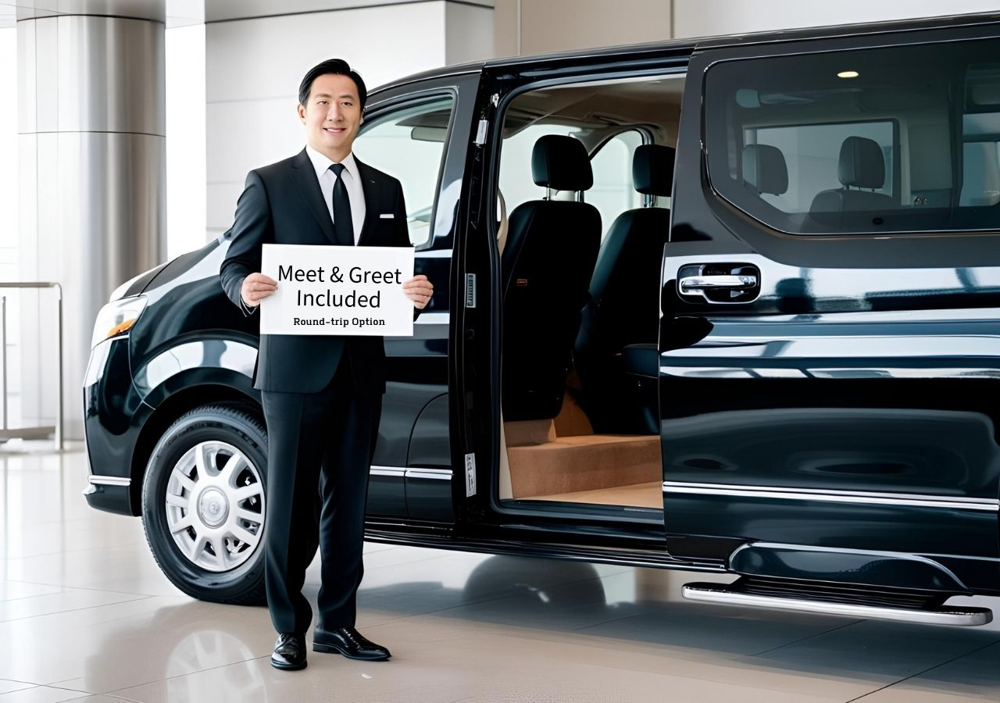
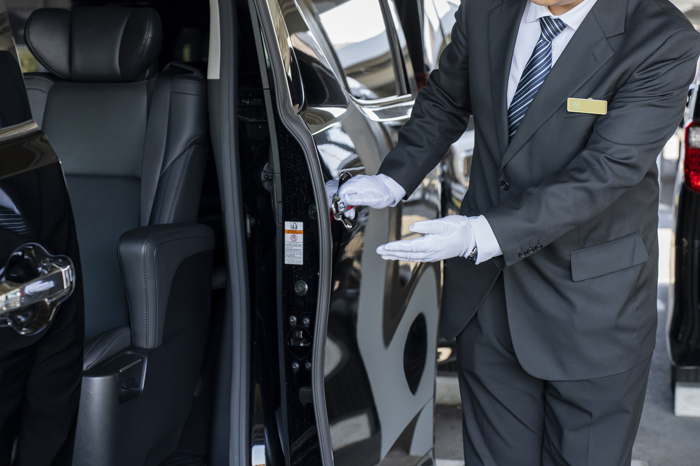
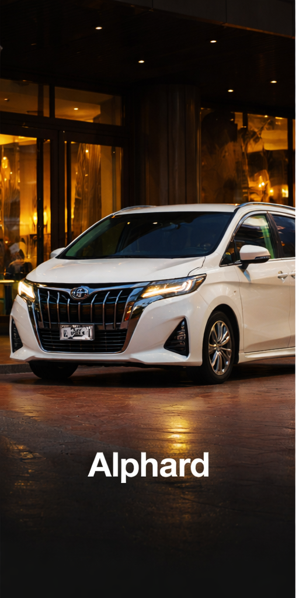
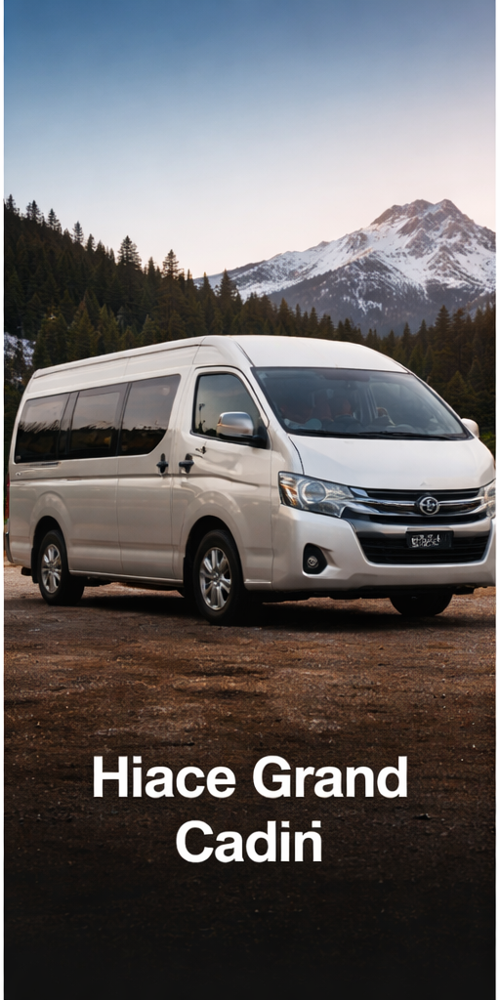
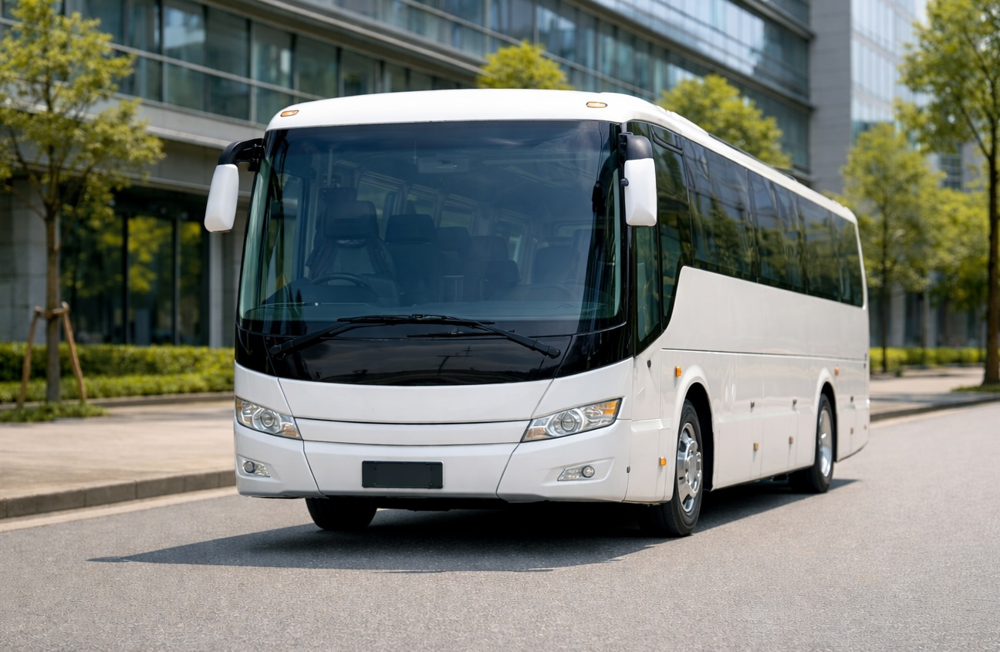

Plan airport transfers, private rides, and custom day trips with professional drivers, comfortable vehicles, and a smarter way to find the best option for your journey.
Tell us where you're going, how long you have, and your group size. We’ll suggest the most suitable route, service, and vehicle for your trip.
Your result will appear here.
Choose the category that best matches your travel plan, then continue to the exact route or service page.
Private airport transfers between major Japan airports, city hotels, resorts, and popular destinations with reliable door-to-door service.
View Airport TransfersComfortable one-way transfers between cities, hotels, cruise ports, ski resorts, and popular destinations.
View Private TransfersPrivate charter service for popular sightseeing spots, hidden gems, family trips, and custom-made day tours across Japan.
View Charters & ToursBook private airport transfers from Japan’s major international airports.


Private airport transfers should feel simple, clear, and stress-free. We focus on the things travelers care about most: timing, communication, comfort, and reliable support.
We monitor arriving flights into Japan so airport pickup timing can be adjusted if your flight is delayed.
Clear support before and during the trip, with direct contact when needed for smooth coordination.
Choose from Alphard, Hiace, and larger vehicles depending on your group size and luggage needs.
Pickup guidance, route coordination, and timely support help make arrival in Japan easier.
Choose the vehicle that best fits your group size, luggage needs, and travel style.

Ideal for airport transfers, couples, families, and standard luggage.

Spacious option for larger groups, family travel, and multiple suitcases.

Suitable for group transfers, company travel, events, and high-capacity transportation.
Selected reviews from travelers who booked airport transfers and private transportation with Pick-U.
Clear answers about booking, airport pickup, luggage, payments, charter service, and travel policies in Japan — designed to help you book faster and travel with confidence.
We recommend booking your transfer at least 48 hours in advance to help secure vehicle availability.
For last-minute bookings, we may not be able to arrange a vehicle if required information is missing or if inventory is already limited.
Once your booking is confirmed, you will receive a confirmation email with your voucher and trip details.
A trip reminder email will be sent 3 days before your trip, and your driver will contact you via WhatsApp before pickup.
Same-day bookings may be possible depending on vehicle availability.
Please contact us first. We will check our schedule and confirm whether we can arrange the transfer. An urgent handling fee may apply.
Yes. Many customers choose to book round-trip airport transfers for convenience.
Round-trip bookings may also include special discounted pricing compared with booking two separate one-way transfers.
The meeting point depends on the service option you booked.
Standard Pickup: The driver will wait at the designated pickup area outside the terminal. A map will be sent with your trip reminder email.
Meet-and-Greet Service: The driver will wait inside the arrival hall holding a name sign.
Yes. Meet-and-greet service is available as an optional add-on.
With this service, the driver will wait inside the arrival hall with your name sign, making the pickup process easier after landing.
Please inform us if your flight is delayed or canceled. For arrival pickups into Japan, the driver will monitor your flight and adjust the pickup time based on the actual landing time.
The driver will wait up to 90 minutes after landing free of charge. Overtime waiting charges may apply after the free waiting period.
If the delay exceeds 4 hours, we may not be able to provide the service due to driver scheduling. In that case, a full refund minus a 5% processing fee may be provided.
Please note that we only track flights that are arriving in Japan.
Waiting time depends on the pickup arrangement.
Default airport pickup with flight tracking: Free waiting time is 90 minutes after actual landing.
Pickup time manually selected in advance through customer service: Free waiting time is 30 minutes, and flight tracking is not included.
Additional waiting time may incur an overtime charge.
Your driver will contact you via WhatsApp, so please check your messages first.
You should also review the meeting instructions in your confirmation email and trip reminder.
If you still cannot locate the driver, please contact us immediately and our support team will assist you as quickly as possible.
Yes. Pickup time changes are possible if requested at least 2 days before your trip.
Changes requested one day before travel may still be possible, but they depend on the driver’s schedule.
Changes to the pickup or drop-off location may be possible if requested at least 2 days before your trip.
Additional charges may apply if the updated location is outside the original service area or requires a different route.
Yes. Please send us your updated flight number at least 2 days before your trip so we can adjust the pickup arrangement if needed.
If the number of passengers or luggage increases, the originally booked vehicle may no longer be suitable.
In that case, we may need to arrange a larger vehicle or an additional vehicle, and extra charges may apply.
All bookings require full payment in advance in order to secure the vehicle and driver.
Once payment is completed, your reservation will be confirmed.
Yes. Certain additional fees may be paid directly to the driver in cash on the day.
These charges will be explained in advance whenever applicable.
Yes. After payment is completed, you will receive an invoice and booking voucher by email.
If you need a specific invoice format, please let us know in advance.
Each vehicle type has a maximum passenger and luggage capacity.
Alphard (up to 6 passengers): Recommended for up to 4 passengers with 4 large suitcases.
Hiace (up to 9 passengers): Recommended for larger groups or extra luggage.
For comfort and safety, luggage capacity must always be respected.
No. One Alphard cannot safely accommodate 6 passengers with 6 large suitcases.
In this case, we recommend either booking a Hiace van or reserving two Alphard vehicles.
If your luggage exceeds the vehicle capacity on the day of service, the driver may not be able to load all items.
In that case, extra luggage or passengers may need to use alternative transportation.
To avoid this situation, please tell us in advance if you will travel with extra luggage or oversized items.
Yes, but please inform us in advance.
Certain large items such as surfboards, golf bags, strollers, wheelchairs, or oversized luggage may require a larger vehicle.
A charter service includes:
Parking and highway tolls may be included depending on the tour area.
Yes. During a charter service, the driver can wait while you visit attractions, restaurants, or shopping areas.
The service is based on the hourly booking duration.
Yes. Additional stops can usually be arranged as long as they remain within the reserved time and service route.
For longer detours, additional time or extra charges may apply.
If the service exceeds the reserved duration, overtime charges will apply.
Overtime is subject to the driver’s schedule and may not always be available on the day.
For cleanliness and comfort, eating inside the vehicle is generally not permitted.
Drinks with secure lids are usually acceptable.
Yes. Child seats are available upon request.
For a one-way transfer, one booster seat is provided free of charge. For full-day charter bookings, please let us know the child’s age in advance if an additional child seat is required.
Additional charges may apply depending on the seat type and quantity.
Basic English communication is available, and translation app support can also be used when needed.
If you need further travel assistance, please contact our customer support team.
Yes. Extra charges may apply depending on the booking conditions.